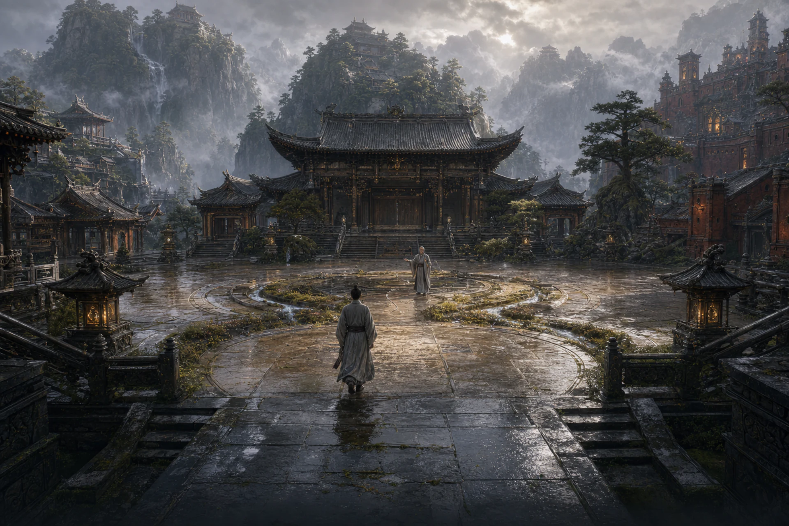

以太初为纸，以五行为字。第一法留下答案，第二法决定它将走向何处。
天衍圣地五峰环绕中宫，水脉、药圃、炉院、土台与矿路首尾相接。门人兼修金木水火土，却只能携四门主动神通入阵；胜负不在某一法的孤立强弱，而在每次留印之后如何落下下一子。

战斗定位
- 核心资源：衍数，上限 3 点。
- 默认法术：《太初玄光》，无属性且不会扰动已有法印。
- 核心机制：五行落印、相生与相克反应、四槽配法。
- 道途一：河图演生，重视循环、治疗、护盾与资源续接。
- 道途二：洛书制化，重视移宫、驱散、控制、削弱与爆发。
天衍神通不受异灵根失配影响；与本命灵根相同的法术仍可获得灵根共鸣。因此它可以稳定使用五行体系，同时保留角色先天灵根带来的专精价值。
五行法印如何运作
木、火、土、金、水的落印术命中后，会在目标身上留下对应法印。下一门五行术式到来时：
- 相同元素会刷新法印。
- 按 木生火、火生土、土生金、金生水、水生木 衔接，会触发化生反应。
- 按 木受金、火受水、土受木、金受火、水受土 的顺序衔接，会触发冲克反应。
- 不构成相生或相克时，旧印会被新印替换，但不产生反应。
十种具名反应分别为：
| 前印 → 后法 | 反应 | 主要倾向 |
|---|---|---|
| 木 → 火 | 燎原 | 提高主伤害，并追加持续伤害 |
| 火 → 土 | 熔岩 | 提高主伤害，并留下持续伤害 |
| 土 → 金 | 锻锋 | 提高主伤害 |
| 金 → 水 | 寒泉 | 提高主伤害 |
| 水 → 木 | 滋荣 | 提高主伤害，并回复气血 |
| 火 → 水 | 蒸发 | 追击，并结算已有灼烧 |
| 水 → 土 | 泥沼 | 追击并尝试定身 |
| 土 → 木 | 崩根 | 追击并降低法术防御 |
| 木 → 金 | 断脉 | 追击并尝试禁法 |
| 金 → 火 | 熔金 | 追击并降低物攻与法攻 |
每次成功反应都会推动“衍数”。达到三数后，河图或洛书道途会结算各自的核心效果。
六卷心法与神通
| 心法 | 长期成长 | 代表神通 |
|---|---|---|
| 《天衍五行真经》 | 宗门总纲 | 《太初玄光》《移宫换宿》《五气归藏》 |
| 《青华生元录》 | 最大气血 | 《青萝生脉》《万木回春》 |
| 《离明流火章》 | 法术攻击 | 《离火流照》《火里种莲》 |
| 《坤舆载物篇》 | 法术防御 | 《坤岳镇形》《地载无疆》 |
| 《太白裁虚诀》 | 法术穿透 | 《庚金裁云》《太白破阵》 |
| 《玄冥行川法》 | 最大法力 | 《玄水回澜》《天河洗心》 |
五行落印术负责建立反应，内景法则承担治疗、净化、护盾和资源回转。《移宫换宿》可以沿相生次序改变现有法印，为原本不存在的后续反应开路；《五气归藏》则把未尽法印收回太初，转化为防护、养气与下一轮的准备。
道途一：河图演生
河图示其流，强调“三数成图、内外相养、留白不断”。
- 第三次反应触发河图周天，强化主伤害并回复气血与法力。
- 治疗、壁垒与秘法可以进入反应构筑，不必四槽全带落印术。
- 《太初玄光》可在不破坏法印的情况下等待冷却与法力窗口。
- 参悟可强化木行治疗、火土防护、天河净化、化生回复与冲克护盾。
自动战术包括 小周天、养元、不绝：分别偏向连续反应、低血低蓝时优先内景法，以及在无法立即反应时保存法印。
道途二：洛书制化
洛书定其位，强调“移宫改局、制化断势、三数决胜”。
- 第三次反应触发洛书断局，追加稳定的无属性伤害。
- 衍数积累不仅是终点，也能强化崩根、熔金等削弱效果。
- 《移宫换宿》可以用更短路径准备关键冲克。
- 泥沼、断脉、破防、削攻与《太白破阵》的驱散共同压缩敌方选择。
自动战术包括 破阵、锁机、断局：分别倾向驱散增益、准备控制反应，以及追求最高的直接反应伤害。
山门舆图

天衍圣地以衍天殿、五经阁、河洛台和中宫演法台为核心。五峰并非五座割裂的院落：水入木、木生火、火归土、土藏金、金又引水，宗门空间本身就是五行推演的第一课。
选择建议
喜欢连续反应、资源管理与攻守循环，可以选择河图演生；喜欢提前规划两步、主动改印，并用控制与削弱打断敌方节奏，则更适合洛书制化。
天衍最重要的配装问题不是“哪四门数值最高”，而是“这四门能否构成稳定的印法路径”。至少保留一种等待、改印或归藏手段，通常比盲目塞满五行攻击更稳。